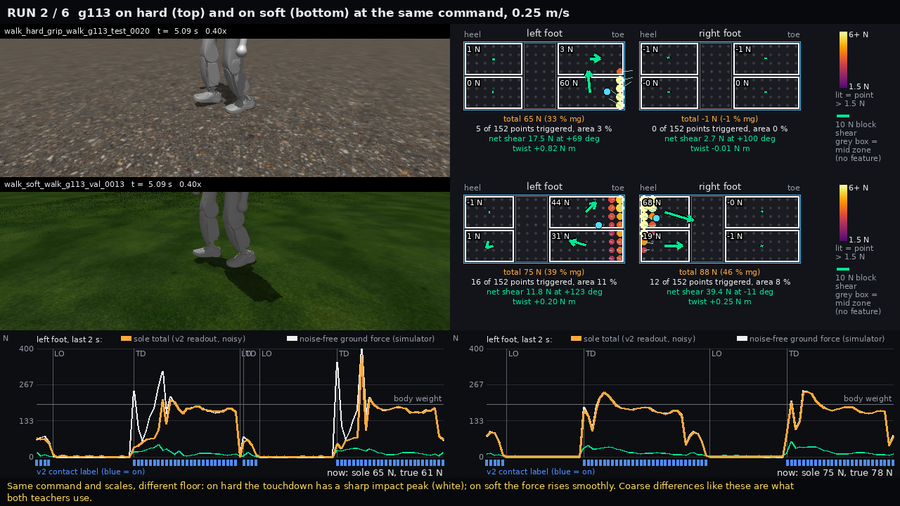
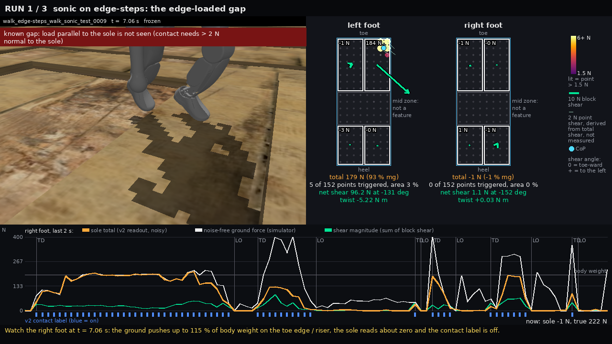

The sole, close up
What the simulated sole actually reports while the K1 walks: which sensing points fire, what the shear looks like, and where the sole's reading departs from the true ground force. Seven short segments from the two experiments.
In short
- The sole model was the same in both experiments. Both replay the step-1 episodes exactly, so pressure and shear come from one sensor model.
- Totals are right. Standing force equals body weight to within 0.89 % in the six-class data and 0.10 % in the two-class data, measured on the simulator's noise-free force.
- The readout carries deliberate noise. Two robots standing with the same true force read −5.7 % and +1.2 % on the sole.
- One gap is known and not fixed. A load that runs parallel to the sole is not seen. In one heel-to-toe step the ground pushes with 222 N and the sole reads about zero.
- Shear is four vectors per foot, and in this rigid-body simulation they carry about three independent numbers.
The clip
Left: the feet. Right: both soles, with each of the 152 points per foot drawn as a dot that lights up above 1.5 N. The four white boxes are the pressure blocks, the bold arrows are the four shear vectors, the blue dot is the centre of pressure. Bottom: the sole's total force (orange) against the simulator's true ground force (white), with the contact label as a blue band.
| Segment | What it shows |
|---|---|
| 1 | Flat-foot gait on hard floor, with one touchdown and one lift-off replayed at 0.2× so the order of points lighting up can be read. |
| 2 | Soft floor, then slippery floor, on the same scales. |
| 3 | Heel-to-toe gait on step edges: the known gap, slowed to 0.1× and frozen. |
| 4 | Two robots standing still: equal true force, different sole readings. |
| 5 | The nominal and the shifted sensor model reading the same steps. |
| 6 | Hard floor above, soft floor below, same commanded speed of 0.25 m/s. |
| 7 | Crossing from hard to soft: the step before, the boundary step and the step after. |
Hard against soft

Reading the frame. Differences this coarse are what the teachers use, and why both score about 0.99 on hard against soft. Over a whole step the contact area is 26 % on soft floor against 20 % on hard, though single frames go both ways. The sole's total also undershoots the impact peak on hard floor.
The known gap

- Cause. The sole counts contact only when the force perpendicular to it exceeds 2 N. At toe-off the rigid foot is pitched steeply and pushes on its front edge, or it stubs a step riser. The load then runs almost parallel to the sole.
- How often. In 50 of 2,095 swing phases of a six-class sample, 43 of them in the heel-to-toe gait. In the two-class experiment, which uses one flat-foot gait, 0 of 1,303.
- Effect on the results. The step windows the teachers read overlap such a moment in 0.0 % of steps for one flat-foot gait, 0.4 % for the other and 3.0 % for the heel-to-toe gait.
Why four shear vectors
- The design. Front and back of the foot, each split into left and right. A design choice from step 1, not a measured optimum.
- More would add nothing here. In a rigid-body simulator the shear at each point is the foot's total shear shared out in proportion to pressure, plus a twist term. That is about three independent numbers per foot. The faint small arrows in the clip are derived this way and are not measured.
- Fewer was not tested. Only none against four was measured: four vectors add about 3 to 4 points on a known gait and more on an unseen one. The numbers by sensor density are in the sensor-layout check.
What this does not show
- A real sole deforms, and slips partly inside the contact patch. Neither is simulated.
- The foot is a rigid box, so a few corner points carry the load at heel strike and toe-off.
- The per-point range and noise are placeholders until a real recording exists.
Related: six-class dataset, two-class dataset, teachers, sensor-layout check.